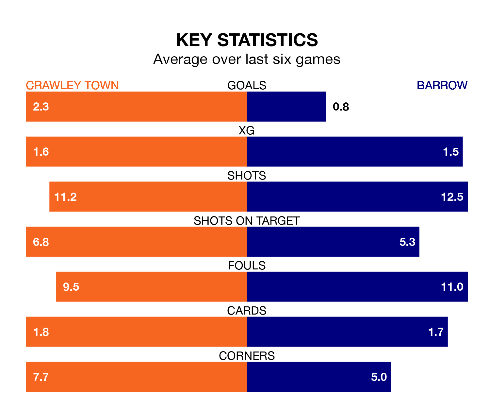

Barrow make the journey to the Broadfield Stadium to play Crawley Town on late Tuesday looking to pick up points to end their three-game losing streak.
Barrow's struggles have left them with seven points from their last six EFL League Two matches, while their opponents have earned nine from a possible 18.
With 68 goals in 43 games so far this season, Crawley are scoring more than average in the league with 1.6 goals per game. And they are conceding at an average rate, letting in 64 goals at a rate of 1.5 per game.
Barrow, meanwhile, are below average scorers, with 1.4 goals per game, compared to a league average of 1.5. They have conceded 1.1 goals per game.
In the last 10 years, Crawley and Barrow have played each other on seven occasions. Crawley won four of them and Barrow three.
On average, the Red Devils scored 1.3 goals and the Bluebirds 1.4 in those matches.
Their last meeting was on November 18, when Barrow won 1-0 at home.
With Paul Farman between the sticks, the Bluebirds can rely on one of the league's safest pair of hands. He has kept 14 clean sheets in his 40 appearances this season, and only two other 'keepers – Stockport County's Ben Hinchiffe and AFC Wimbledon's Alex Bass – have been able to prevent the opposition scoring on more occasions in EFL League Two.
In Town's net, Corey Addai has seven clean sheets in 36 games. He has conceded a goal every 68 minutes, 20% more often than the 80 minutes between goals for Farman.
The visitors are sixth in the table after 42 games, of which they have won 18 and drawn 13, earning 67 points.
The Red Devils are one place behind Barrow in seventh, with 20 wins and five draws putting them on 65 points.
Crawley's last match was on Saturday, a 3-2 loss against Colchester United, with Harry Forster and Klaidi Lolos getting the goals for the Red Devils.
Barrow lost 3-0 against Gillingham last time out, also on Saturday.
Tuesday's match will be refereed by Will Finnie, who has taken charge of 10 EFL League Two games so far this season, issuing three red cards and booking 30 players. He has awarded one penalty.
The last Crawley game Finnie refereed was a 1-1 away draw with Walsall on October 24. His last Barrow match was their 2-2 draw away at Milton Keynes Dons on October 14.
Updated: 11:31 (UTC), 15/04/24